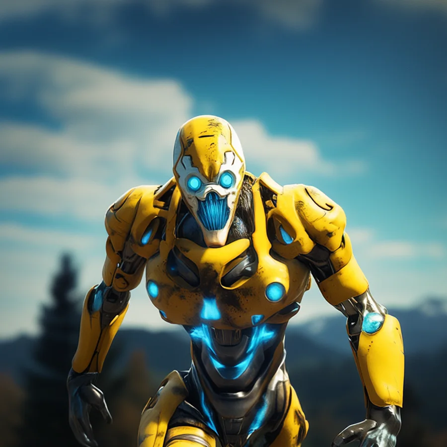

©
©

Dyozen
Grim Corsair · Recruit
Dyozen manages decay the way a quartermaster manages supplies. The Rot Slash drains the flanks and cuts through the enemy in the middle. The Corsairs believe everything on Earth 1 will rot eventually. Dyozen just helps it along.